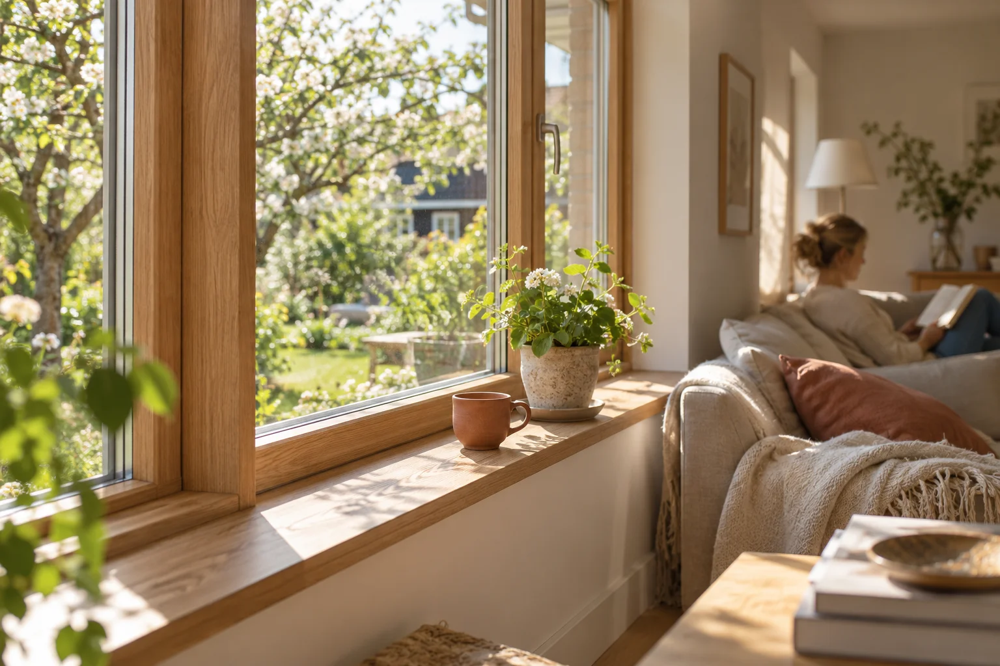

Naturlig karakter
Trevinduer
Trevinduer har en naturlig plass i norsk byggeskikk. De kan understreke særpreget i et eldre trehus, videreføre uttrykket på hytta eller inngå i moderne arkitektur med rene linjer.
Tre passer godt for deg som setter pris på et ekte naturmateriale og ønsker muligheten til å fornye overflatebehandlingen eller endre farge senere. Samtidig må du regne med ettersyn og vedlikehold av malte eller beisede flater.
- Et varmt og naturlig materialuttrykk
- Passer både klassiske og moderne bygg
- Mulighet for ny overflatebehandling